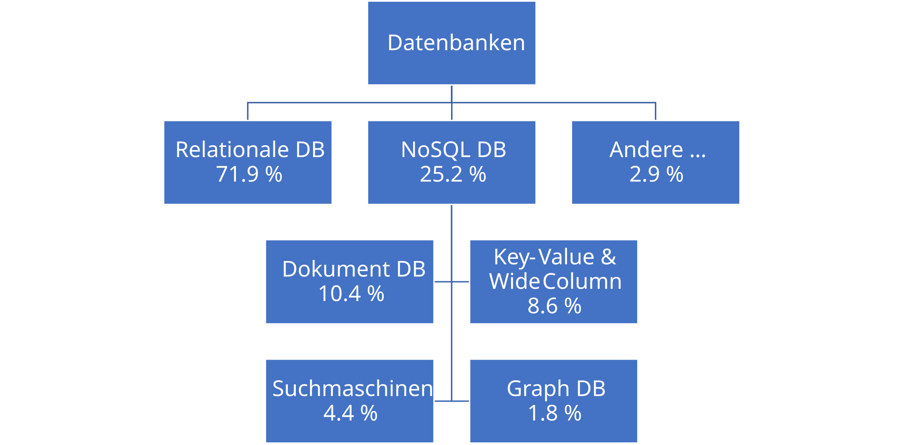

Datenbanktypen
Joern Ploennigs · AI4SC
Midjourney: tree-like branching diagram showing major database families, inspired by Gustav Klimt
Hörsaalfrage
Wann reichen Dateien nicht mehr aus und wir brauchen eine Datenbank?
Ein kurzes Szenario
- Ein Team pflegt dieselbe Bauteilliste als Datei
- Person A korrigiert Bezeichnungen, Person B ergänzt Messwerte
- Parallel entsteht schon die nächste Auswertung auf einer alten Kopie
- Plötzlich gibt es Dubletten, Konflikte und unklare Versionen
- Genau für solche Situationen brauchen wir jetzt präzise Begriffe
Dateien kippen irgendwann um
- Wenige Daten, ein Nutzer, lineare Ablage: Datei reicht oft
- Viele Daten, mehrere Nutzer, konkurrierende Zugriffe: Datei wird fragil
- Abfragen, Integrität, Synchronisation, Protokollierung: dafür ist ein DBMS gebaut
- Rückbezug:
12a_Datenhaltungzeigte genau diese Grenzen
Datenbank und Datenbanksystem
Datenbank
Unter einer Datenbank (DB) versteht man logisch zusammengehörende Daten.
Datenbankmanagementsystem
Ein DBMS verwaltet diese Daten, koordiniert Zugriffe und schützt ihre Konsistenz.
Datenbanksystem
Datenbank + DBMS zusammen bilden das Datenbanksystem.
Dateien versus Datenbank
Datei
- Jede Anwendung baut eigene Struktur
- Kopien und Redundanz entstehen leicht
- Gleichzeitiges Schreiben ist heikel
- Abfragen müssen selbst programmiert werden
Datenbank
- Gemeinsames Modell für alle Anwendungen
- Zentrale Regeln für Integrität
- Transaktionen koordinieren Zugriffe
- Abfragen sind Kernfunktion des Systems
Codd: Was eine Datenbank leisten soll
- Integration: gemeinsame, nicht redundante Datenbasis
- Benutzersichten: unterschiedliche Sichten auf dieselben Daten
- Integrität: Regeln gegen widersprüchliche Inhalte
- Transaktionen: Änderungen ganz oder gar nicht
- Synchronisation: parallele Zugriffe sauber koordinieren
- Datensicherung: Wiederherstellung nach Fehlern
Hörsaalfrage
Wenn das Problem schon wie ein Netzwerk aussieht: Warum sollten wir es in Tabellen pressen?

Die eigentliche Auswahlfrage
- Nicht: “Welche Datenbank ist gerade modern?”
- Sondern: “Welche Struktur haben unsere Daten?”
- Dann: “Welche Operationen brauchen wir darauf?”
- Erst daraus folgt die Technologieauswahl
Das Informationsmodell führt
- Tabellarisch, stabil, stark strukturiert → relationale Datenbank
- Dokumentartig, verschachtelt, variabel → dokumentenorientierte Datenbank
- Netzwerk aus Knoten und Kanten → Graphdatenbank
- Einzelwerte zu Schlüsseln, extrem schnell → Key-Value-Store
- Viele Zeilen mit sparsamen Spaltenfamilien → Wide-Column-Store
- Zeitlich geordnete Messreihen → Time-Series-Datenbank
- Suche in vielen Texten → Suchmaschinen-Datenbank
- Ähnlichkeit in Einbettungsvektoren → Vector-Datenbank
Vom Problem zur Datenbank
Problemklasse
- Rohrnetz
- Verkehrsnetz
- Abhängigkeiten
Informationsmodell
- Knoten
- Kanten
- Pfade
Passende DB
- Graph DB
- nicht “Tabellen um jeden Preis”
- siehe auch
10a_Graphprobleme
Noch zwei typische Zuordnungen
BIM / Projektdokumente
- Verschachtelte Objekte
- Nicht jede Entität gleich aufgebaut
- JSON-artige Strukturen
- → Document Store
Strukturierte Verwaltungsdaten
- Klare Spalten
- Wiederkehrende Datensätze
- Konsistenz und JOINs wichtig
- → Relationale DB
Datenbanktypen im Überblick
Verteilung der Datenbanktypen
Relationale Datenbanken
- Daten in Tabellen mit festem Schema
- Stark für Konsistenz, Schlüssel, Beziehungen und JOINs
- Standardsprache: SQL
- Gute Wahl für strukturierte Verwaltungs- und Prozessdaten
- Beispiele: PostgreSQL, MySQL, Oracle, SQL Server
Dokumentenorientierte Datenbanken
- Datensätze als Dokumente, oft in JSON
- Flexible, auch verschachtelte Struktur
- Nicht jedes Dokument braucht dieselben Felder
- Gute Wahl für BIM-nahe oder semistrukturierte Objekte
- Beispiele: MongoDB, Couchbase, Cosmos DB
Key-Value-Datenbanken
- Einfachstes Modell: Schlüssel → Wert
- Extrem schnell für direkten Zugriff
- Gut für Cache, Sessions, Zustände und Konfiguration
- Schwach für komplexe Beziehungen und Abfragen
- Beispiele: Redis, Memcached, DynamoDB
Wide-Column-Datenbanken
- Daten zeilenorientiert, aber mit flexiblen Spaltenfamilien
- Gut bei sehr großen, verteilten Schreib- und Lesevolumina
- Nützlich für Telemetrie, Ereignisströme und große Plattformdaten
- Weniger natürlich für komplexe JOIN-Fragen
- Beispiele: Cassandra, HBase, ScyllaDB
Time-Series-Datenbanken
- Optimiert für Messwerte mit Zeitstempel
- Stark bei Aggregation über Intervalle, Trends und Downsampling
- Gute Wahl für Sensorik, Monitoring und IoT-Daten
- Fokus liegt auf Zeitreihen, nicht auf allgemeiner Anwendungslogik
- Beispiele: InfluxDB, TimescaleDB, QuestDB
Suchmaschinen-Datenbanken
- Optimiert auf Textsuche statt auf Tabellenlogik
- Volltextsuche, Ranking, Stemming, Filter
- Gut für viele Berichte, Gutachten oder Protokolle
- Fokus liegt auf Finden, nicht auf Transaktionslogik
- Beispiele: Elasticsearch, OpenSearch, Solr
Graphdatenbanken
- Daten als Knoten und Beziehungen
- Natürliche Modellierung von Netzen und Abhängigkeiten
- Gut für Pfade, Nachbarschaften und Verbindungsanalysen
- Beste Wahl bei echten Netzwerkproblemen
- Beispiele: Neo4j, Cosmos DB, Virtuoso
Vector-Datenbanken
- Speichern Vektoren statt klassischer Zeilen oder Dokumentfelder
- Optimiert für Ähnlichkeitssuche: “Was ist diesem Objekt am ähnlichsten?”
- Wichtig für Embeddings aus Text, Bild oder CAD-nahen Beschreibungen
- Nützlich in RAG-Systemen, semantischer Suche und Beispielsuche
- Beispiele: Milvus, Weaviate, pgvector
Agentischer Prüfpunkt
Agentic workflow: Wenn KI eine Datenbanktechnologie vorschlägt: 1. Beschreibe zuerst euer Informationsmodell in einem Satz. 2. Prüfe dann, ob das vorgeschlagene DB-Modell dieselbe Struktur natürlich abbildet. 3. Frage nach dem Mismatch: “Welche Teile unseres Problems passen schlecht zu dieser Datenbank?”
- Eine Graphaufgabe in Tabellen kann funktionieren, aber mit Reibung
- Eine Dokumentstruktur in starren Tabellen kann unnötig kompliziert werden
- Häufig ist die beste Antwort nicht eine DB, sondern eine Kombination mehrerer Systeme
- Technologie folgt Problemklasse, nicht Mode
Agentische Verifikation
- Problem: Sensornetz mit Stammdaten, Messreihen und Wartungsberichten
- KI-Vorschlag: “Nehmt einfach PostgreSQL fuer alles.”
- Passung: Stammdaten passen gut in relationale Tabellen
- Mismatch: Zeitreihen und Volltextsuche werden unnötig verbogen
- Bessere Antwort: relationale DB + spezialisierte Systeme, wenn die Problemteile verschieden sind
Auswahlkriterien für diese Vorlesung
- Erst Informationsmodell, dann Technologie
- Erst Entwurf, dann Implementierung
- Oft ist auch eine Kombination mehrerer Datenbanken sinnvoll
- Vorschau:
12c_Datenbanken_Entwurfvertieft das Modellieren vor dem Bauen
Merksätze
- Datenbanken werden interessant, wenn Dateien bei Größe, Zugriffen und Integrität scheitern
- Wähle die Datenbank nach dem Informationsmodell
- Relational für tabellarisch, Document Store für BIM-artig, Graph DB für Netzwerke
Questions

Artificial
Intelligence